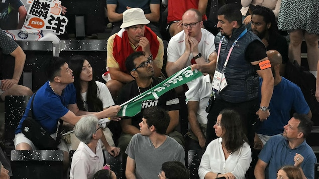
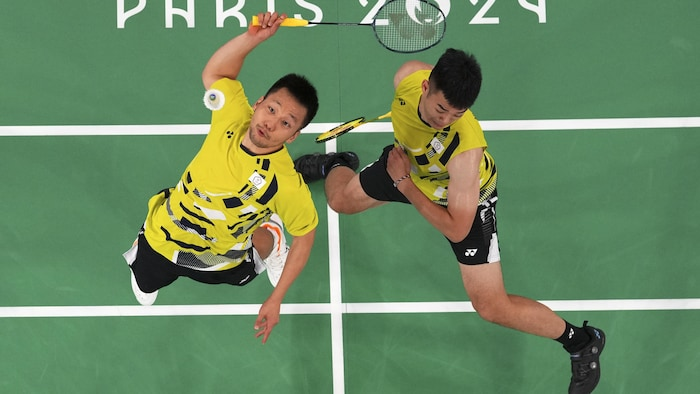

巴黎奥运羽毛球男双丹麦对台湾准决赛中，一名球迷一条印有台湾英文名TAIWAN的毛巾，被保安取走。
照片：afp via getty images / ARUN SANKAR
RCI
由周五准决赛至周日决赛，台湾支持者都指场內保安及不知名人士，将他们支持台湾的标语或告示取走。
台湾选手李扬和王齐麟周日击败中国选手王昶及梁伟铿，卫冕奥运男双金牌。
周五準決賽时，一名球迷一条印有台湾英文名«TAIWAN»的毛巾被保安抢走。

台湾选手李扬（左）和王齐麟，周日击败中国选手王昶及梁伟铿夺羽毛球男双冠军。
照片：AP / Hamad I Mohammed
另一名支持者手持”台湾加油”牌子被撕毁。
台湾外交部称此为暴力事件，违背友谊和尊重奥林匹克的价值观，呼吁法国当局调查事件。
台湾官方媒体中央社报道，法国台湾协会主席薛雅俶称在周日决赛时，被三名保安没收了她一张空白纸板。
薛表示，工作人员告诉她，收到了奥运会的指示，说任何与台湾有关或显示台湾的东西都不能出现
。
薛雅俶说，许多观众都拍下一名中国妇女手持手机，站在保安旁指挥他们没收台湾支持者标语和横幅。
薛认为中国的干涉已经超出了国际奥委会关于公平、包容和非歧视的框架范围。
国际奥委会：横幅是不允许的
国际奥委会发言人亚当斯（Mark Adams）在被问及事件时，引用了1981年台湾作为中华台北参赛的协议，这有非常明确的规定。横幅是不允许的。很明显，随之而来的问题会是’如果那是允许的，那为何这个不允许？’这就是规则相当严格j的原因。
亚当斯又称，要设法让206个国家奥委会都同意，是相当艰巨的任务。
根据国际奥委会的规定，观众不得展示带有政治信息或支持非奥运参赛实体的旗帜或标志。
法国参议员卡迪奇（Olivier Cadic）在社交平台Ｘ转载事件：
中国声称台湾是自己的领土，拒绝接受台湾独立身份的一切表现，只允许台湾以中华台北
名义参加奥运会和其他国际比赛。同时，台湾不能悬挂自己的国旗，也不能奏自己的国歌。
中国中央电视台当日只是部分转播赛事，没有播放台湾获胜一刻，亦没有播出颁奖礼。 台湾球迷， 则在颁奖仪式上唱起了国旗歌。
The Associated Press et CNA. Adaptation en chinois par Donna Chan.
Début du widget Widget. Passer le widget ?
Go #Taïwan 🇹🇼 台灣加油！
Excellence, respect and FREEDOM ! @Olympics
卓越、尊重和自由！@Senat @UC_Senat @francediplo @iflorennes92 pic.twitter.com/F96KwbZmOT— Olivier Cadic (@OlivierCadic) August 3, 2024
Fin du widget Widget. Retourner au début du widget ?文章来源于RCI:台湾羽毛球男双夺金 球迷指奥运保安没收标语